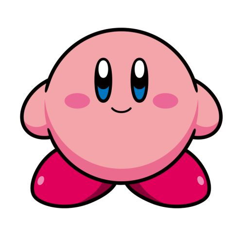
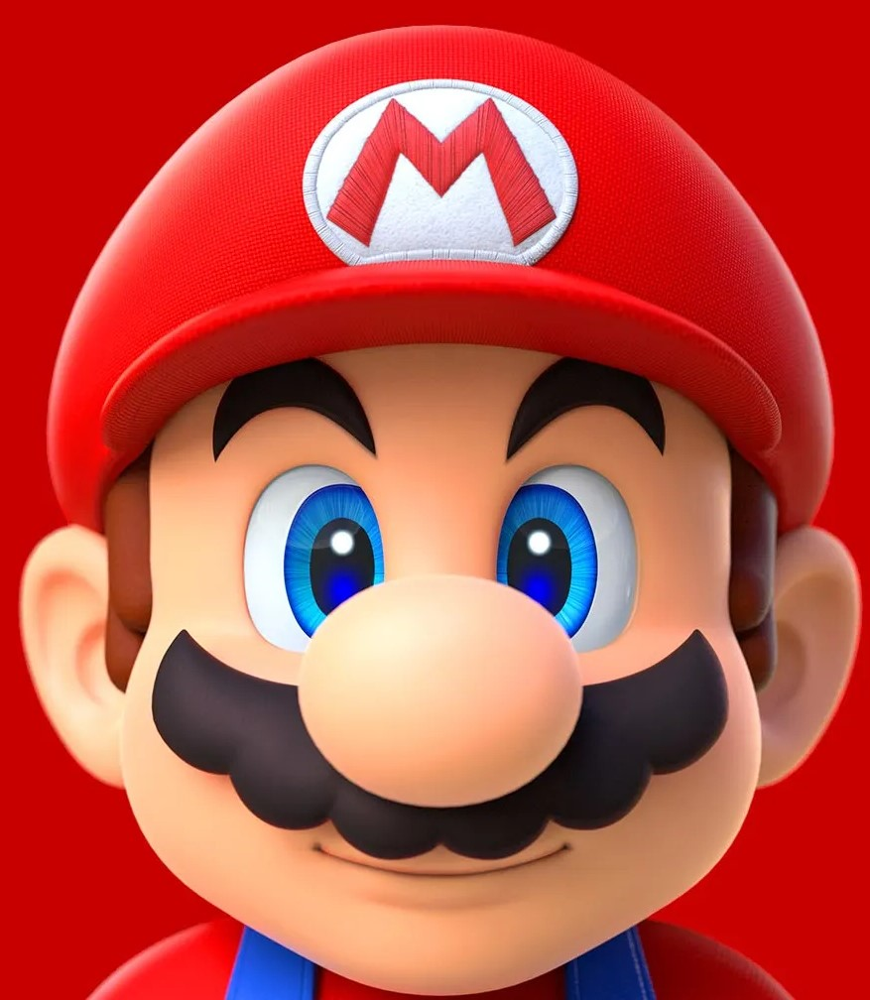
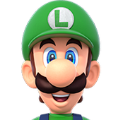
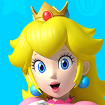
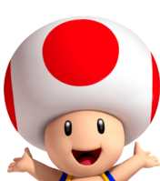
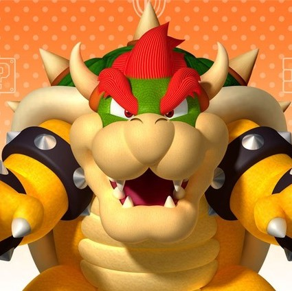

1-
Mais de 30 de historia, sendo a empresa de jogos mais antiga ainda em funcionamento.

2-
Vendou só no seu mais novo lançamento(switch) mais de 112 milhões de unidades.

3-
Produziu mais de 303 jogos para seu consoles em toda sua historia.

4-
Criadora de grandes franquias tais como- Super Marios Bros. , Kirby , Pokemon , Zelda , Donk Kong e etc.

5-
Esta no ramo de filmes com a serie pokemon e mais recentemente seu novo lançamento 'Super Mario Bros.
the Movie'

6-
E a maior empresa de games da Atualidade em vendas superando a rivais Sony e Microsoft.
Sobre
A Nintendo foi fundada no dia 23 de setembro de 1889 por Fusajiro Yamauchi em Kyoto, no
Japão, como fabricante de um jogo de cartas chamado Hanafuda. Em 1969, o herdeiro da companhia, Hiroshi
Yamauchi, decidiu expandir o campo de atuação da empresa, introduzindo-a no ramo dos games.
A década de 1970 marcou sua entrada oficial para o mercado de jogos, mas foi somente nos anos 1980 que a
empresa, chefiada por Yamauchi, se consolidou no setor, após a chegada aos Estados Unidos.
Para receber as mais novas novidades da Nintendo, cadastre seu nome e gmail em nosso site e sempre esta informado!
Seu nome
Seu Gmail
Nintendo Store